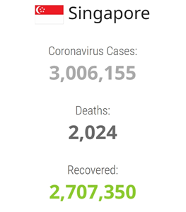
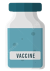
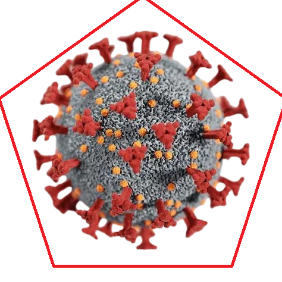

Covid-19 Timeline In Singapore
Shows only the major announcements
Singapore’s Covid-19 Timeline Summary
- Early 2020: Singapore confirmed its first Covid-19 case — a 66-year-old man from Wuhan. By February 7, the Ministry of Health raised the Dorscon level from yellow to orange, signaling widespread transmission from unknown sources. Panic buying occurred but authorities assured sufficient supplies. A year later, the Dorscon level remained orange.
- February 13: The government introduced the Unity Budget, the first of four fiscal packages totaling nearly S$100 billion. This supported citizens and businesses through cash aid, job support payouts, rental relief, and assistance for low-income and self-employed groups.
- March 20 - 21: TraceTogether, a Bluetooth-based contact tracing app, was launched. Privacy concerns arose over data use for police investigations, leading to government reassurances on limitations. Singapore reported its first Covid-19 deaths. The “circuit breaker” partial lockdown began, closing schools and workplaces, limiting social interactions, and was extended until June 1 due to ongoing cases. The lockdown caused lifestyle shifts and mental health concerns.
- April: Covid-19 cases surged in foreign worker dormitories, prompting lockdowns in these facilities. Mask-wearing outside the home became mandatory from April 14, with fines for non-compliance. Nationwide mask distributions were conducted.
- June: Singapore started phased reopening on June 2, allowing businesses and activities to resume with restrictions. Border reopening began with travel lanes to China, Malaysia, Brunei, and New Zealand. A planned travel bubble with Hong Kong was postponed due to a spike in cases there. Phase two reopening on June 19 allowed dining in and limited household visits with safety measures.
- December: Singapore authorized the Pfizer-BioNTech Covid-19 vaccine, receiving the first shipment on December 21. Vaccinations began with frontline healthcare workers by the end of the month. The country moved into phase three reopening on December 28, permitting larger dining groups while maintaining vigilance despite low case numbers.
A graph of active cases in singapore over a period of time.
Statistics and Interactables
Covid Data in Singapore
Do you know how the pandemic spreads? Test your knowledge here!
Total score: 0
Covid stat simulator 1000
Infections: 704753890
Deaths: 7010681
Enter the death or infection rate in the box.
E.g: If the death rate is high the total infection will be reduced.
Avoid the covid
Press WASD keys to move or use the buttons below
If the two items are overlapped, refresh the page again.
Difficulty:Game


Score: 0
Reach 2000 points to win the game without touching the virus.